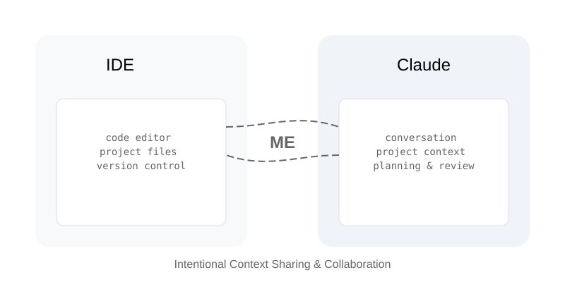

extract-files dir [-e ext1 ext2...] [-f file1 file2...] [-o output_dir] [-t]Towards a Better Workflow
prompting
rag
Lessons learned from integrating AI assistants into daily development

Over the last few months, I have started using Claude more consistently in my day to day programming. Overall I would say that it has made me more productive, although it hasn’t been a straight line and at times the process can be frustrating. This post is to share what I’ve found works.
This post explains my current workflow with commentary, as well as tips and tricks I’ve learned along the way.
My (Simple) Setup:
- Claude - Web browser (usually) or macOS app. I have a Pro account which I use for all my general purpose, day-to-day tasks. Each IDE project has its own Claude Project.
- IDE - VSCode / Xcode / Zed, etc.
- Warp & Terminal - I use Warp whenever I am doing something I don’t know how to do, or when I want fancy autocomplete. For everything else I work in a minimally skinned, Home Brew themed Terminal window.
extract-files- A little bash extension Claude and I created (more on this later).- GitHub - Source control is crucial to reign in the chaos of working with LLMs. Accessed via the command line.
- Source Tree - For reviewing changes before committing new work.
Wait, But Why?
I’m sure some of you are wondering why I’m not using Cursor, the VSCode Copilot extension, or [insert other AI integrated into an IDE]. My reason is basically that I want a separation of concerns.
When I am working in my IDE I want to focus there. When I want to use a model to help me write, fix, or refactor some code I want to be very deliberate about what I’m feeding the model, when, and why. I worry (possibly overly so) about what might be going on between my code and what is being tokenized by the model. If I control it, at least I can’t blame anyone else when things go awry.
Along with that, this setup allows me to think of the LM as a partner that I can bounce ideas off, flesh out my plans, and sanity check my hairball schemes. Having a language model tightly integrated into an IDE would likely skew my usage towards writing code, and I get at least half my benefit from fleshing ideas out before writing, or in response to generated code.
Anyway, while I’m sure we could debate ad-nauseam whether this is the best setup, I like it, and it’s working for me.
So let’s break it down:
Finding Zen
My general workflow when working with an assistant is as follows:
- Make sure everything is checked in to git - This is super important as we need a quick way to backtrack when things go awry (and they will). When working in a shared codebase I would also checkout a new branch to contain this change.
- Figure out what single thing to work on next - The smaller and more modular the better.
- Update Claude’s Project Knowledge to reflect the current state - Here’s where
extract-filescomes in, more on that below.
- Have one or more conversations regarding the next task - Often I will talk it through first, asking Claude not to write any code. Then, once I’m confident that I can fully articulate the change I want to see I ask Claude to make the change as concisely as as possible with clearly separated concerns.
- Revise - This step generally takes some back and forth. I tell Claude what I do and don’t like about its output. Sometimes it takes a couple of restarts with better prompts, refined through our conversation.
- Implementation of the change within the IDE - This is mostly a copy / paste exercise, and gives you another perspective on how the change looks, fits, and feels.
- Refine - During this stage I use Source Tree to look at the diff generated by the change. This helps me think through its broader implications. Sometimes Claude nails it, but often I need to tweak, refine, or even abort and start fresh at this point before I am happy with the result.
- (As needed) Commit works in progress to git - that way you can explore different paths when in the middle of figuring out the final solution. Commits are like game checkpoints that you can always backtrack to whenever you get in over your head. I don’t spend much time on the commit message for these, usually using something like ‘wip’.
- Test - Locate and fix any errors that have been overlooked or outright missed. If the change warrants test cases that have not already been written add them at this point. Also run through your other tests to make sure that the change did not break anything.
- Commit the finished code to git - If working on a branch I like to squash merge back into the trunk I was working off of with a descriptive commit message describing the overall change. This avoids a git history of missteps and poor commit messages resulting from your experimentation.
I have used this general flow over the past few months as I have built out an evaluation framework, explored prompting techniques, and experimented with DSPy, improving on it as I go. I currently using it to build out the backbone for some simple mobile apps that I have been itching to build.
The method’s effectiveness is largely dependent on how complex and atypical the task is. I have pretty much been able to entirely hand off the writing of boilerplate code as well as building solutions to simple, solved problems. However as the complexity increases things start to break down. To mitigate this, I try and make each change as small and modular as possible.
Using this methodology, and with patience and care, I have yet to find a use case (in python) that I haven’t been able to tackle yet. However, it is not without some difficulty.
Pain Point
This flow requires that I am constantly updating my Claude Project’s Project Knowledge files. And (as of January 22nd, 2025) Anthropic did not allow for editing Project Knowledge via an API, so this is a manual process that happens using their drag and drop interface. This isn’t horrible for smaller projects with few files, but can quickly become annoying and then unmanageable as the number of files grow.
Beyond being tedious, changing out Claude’s Project Knowledge files manually was error prone and cumbersome. I would often forget to update the files, or I would lazily assume that Claude would keep track of the changing states of files throughout our conversation. Both lead to at best lessor, or out right wrong, responses wasting time and tokens.
Eventually got fed up and decided to write something. So I used Claude to write a small script to help out. The script is called extract-files and, as its name suggests, it extracts files from directories based on extensions or filenames:
For example, if I wanted to grab all of the python and yaml files, my requirements.txt, and the tree (project diagram) from my current root directory I could easily do so:
extractfiles . -e py yaml -f requirements.txt -t
Tip
Checkout the Usage Instructions for more details.
The files are extracted flatly into the output folder. To account for this flattening, by default the script first creates a diagram of the architecture using tree a script created by Steve Baker, that traverses your project folders and presents them visually using text. By presenting this text tree along with your files it allows Claude to “see” the architecture of your project without having to traverse import statements.
.
├── LICENSE
├── README.md
├── bin
│ └── extract-files
└── tests
└── test_extract_files.sh
Note
The tree of the extract-files project.
The flow of this within my larger flow is to: 1) Delete all files from Claude’s Project Knowledge 2) Run extract-files for the project directory I’m working in 3) Select all in my output folder and drag the extracted files into Claude’s Project Knowledge 4) Run my prompt(s) against the updated knowledge
This is far from perfect. There is still the manual piece of deleting old files, running the script, and importing the updated files. And even if those parts could be automated, I’m bound by the size of Claude’s project knowledge and ultimately Sonnet’s context window.
Still, for the kinds of projects I have been working on, it makes life considerably better.
Delete the current files, run one command, drag and drop everything at once, and prompt away. The manual component makes your actions intentional. And with intention follows better outcomes.
In many ways, this workflow is my simplified version of RAG (Retrieval Augmented Generation). Instead of building complex embedding systems, I’m using Claude’s project knowledge feature as my retrieval mechanism, manually updating the relevant context as I work. While not as sophisticated as full RAG systems, this approach gives me similar benefits: the model has access to my current codebase, can make contextually aware suggestions, and helps prevent hallucination of nonexistent code structures.
Making Life Even Easier
As a complement to the above workflow I have accumulated some best practices that make my LM-ing more pleasant and productive:
- Keep conversations short. Try not to go over 10 turns.
- Start over when things start to go awry, don’t try to course correct. Clearing the slate gives you a good chance to re-ask your question with better prompt, and better prompts generally result in better output.
- When stuck, tell your LM to not write code and talk through the thing you’re working on. Or ask it to give you a few alternative ways forward. Evaluating multiple options is a great way to get unstuck.
That’s a Wrap!
While this workflow may seem more manual than fully automated alternatives, I’ve found that this deliberate approach leads to better code quality and fewer mistakes. The combination of using an LM as a thought partner for planning and architecture, while maintaining tight control over code implementation, has struck a productive balance between AI assistance and human oversight.
If you’ve made it here, thanks for reading! I’d love to hear what works for you. If you’ve got questions or comments please feel free to email me at chuckfinca at gmail dot com.